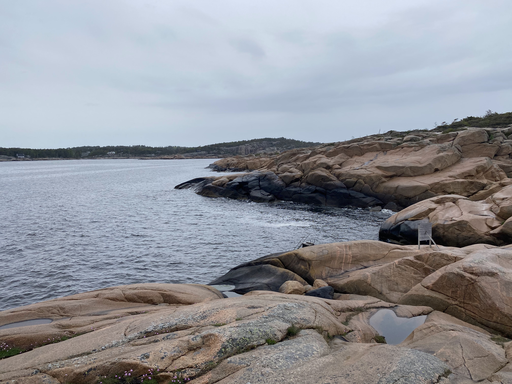
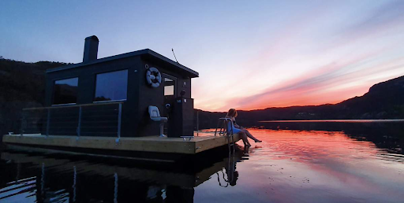
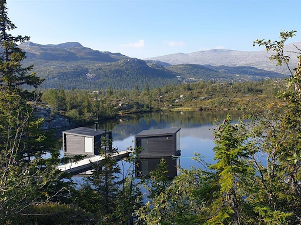

Click on some history
Høysand is a village of 2,000 people,in the municipality of Sarpsborg, Norway.
Sarpsborg was founded over 1,000 years ago by Saint Olaf ll.

Starting of one side of the Oslo Fjord,the Oslo Fjord runs for over 150 miles from the
ocean
to Oslo
The oldest known saunas are in Finland were made from pits dug in a slope in the
ground. Saunas use fire places to creat heat stones are set on top and heated. Water is then poured over the
top to creat steam. The steam creats heat.

The conecpt of the floating sauna